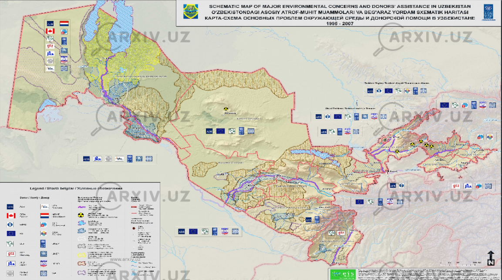

Alohida Muhofaza Qilinadigan Hududlar
1.1. Alohida muhofaza qilinadigan hududlar to‘g‘risida tushuncha
Alohida muhofaza etiladigan tabiiy hududlar – bu o‘zining ekologik, ilmiy, madaniy, estetik va rekreatsion qimmati bilan ajralib turadigan, tabiiy holatda saqlash yoki barqaror foydalanish uchun maxsus huquqiy rejim o‘rnatilgan yer yoki suv uchastkalaridir. Ushbu hududlar tabiatning noyob obyektlarini, ekotizimlarni va genofondni saqlab qolish uchun mo‘ljallangan.
O‘zbekiston Respublikasida bu sohadagi munosabatlar 2004-yil 3-dekabrda qabul qilingan "Muhofaza etiladigan tabiiy hududlar to‘g‘risida"gi 710-II-sonli Qonun bilan tartibga solinadi. Maqsad – tipik, noyob, qimmatli tabiiy obyektlar va majmualarni saqlash, biologik xilma-xillikni ta’minlash va ekologik barqarorlikni qo‘llab-quvvatlash.
1.2. O‘zbekiston Respublikasining alohida muhofaza qilinadigan hududlari va ularning toifalari
| Toifa | Ta’rifi va Maqsadi | O‘zbekistondagi Misollar |
|---|---|---|
| Davlat qo‘riqxonalari | Eng qat’iy muhofaza rejimiga ega hududlar. Xo‘jalik faoliyati taqiqlanadi. Maqsad – tabiiy jarayonlarni saqlash va ilmiy tadqiqotlar. | Zomin, Zarafshon, Hisor, Kitob, Qizilqum, Nurota, Surxon, Chatqol, “Oqtog‘-Tomdi” (2022) |
| Majmua (landshaft) buyurtma qo‘riqxonalari | Tabiiy majmualarni saqlash va tiklash. Ayrim xo‘jalik faoliyatlariga cheklangan ruxsat beriladi. | “Sudochye-Akpetki” (2021) |
| Tabiat bog‘lari (milliy va mintaqaviy) | Tabiatni muhofaza qilish, rekreatsion, ilmiy va madaniy maqsadlar. Dam olish va ekoturizm imkoniyatlari mavjud. | Xorazm milliy tabiat bog‘i (2019), “Janubiy Ustyurt” (2020), Ugom-Chatqol (1976) |
| Davlat tabiat yodgorliklari | Noyob va ekologik, ilmiy, madaniy, estetik jihatdan qimmatli tabiiy obyektlarni saqlash. | - |
| Davlat biosfera rezervatlari | Global ekologik monitoring, tabiiy muhit va biologik xilma-xillikni o‘rganish uchun xalqaro ahamiyatga ega hududlar. | Quyi Amudaryo davlat biosfera rezervati |
1.3. Chuchuk yer osti suvlari manbalarini muhofaza qilish
AMTH tizimida nafaqat yer usti ekotizimlari, balki inson hayoti uchun muhim bo‘lgan chuchuk suv resurslarini, ayniqsa, yer osti suvlarini himoya qilish alohida o‘rin tutadi.

Vazirlar Mahkamasining 2019-yil 11-dekabrdagi 981-sonli qarori bilan tasdiqlangan Nizomga ko‘ra, xo‘jalik-ichimlik suv manbalari uchun maxsus sanitariya-muhofaza zonalari tashkil etiladi. Ularning maqsadi – suv manbalarini ifloslanish va kamayishdan saqlash va sifatli ichimlik suvi bilan uzluksiz ta’minlash.
Sanitariya-muhofaza zonalari uchta mintaqadan iborat:
- Birinchi mintaqa: qat’iy rejimli, har qanday faoliyat to‘liq taqiqlanadi.
- Ikkinchi va uchinchi mintaqalar: suv sifatiga salbiy ta’sir ko‘rsatishi mumkin bo‘lgan faoliyatlar qat’iy cheklangan.